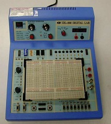
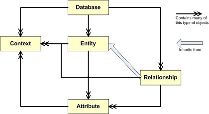
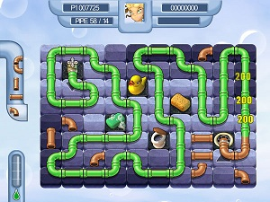
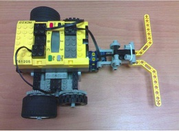
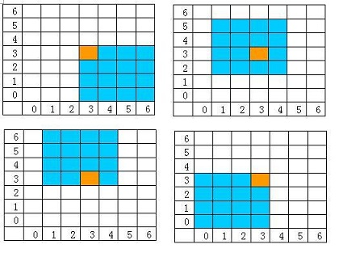
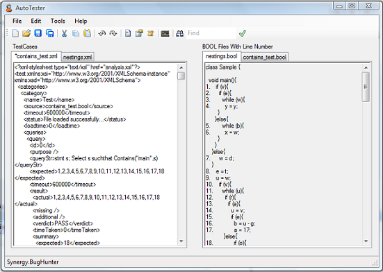
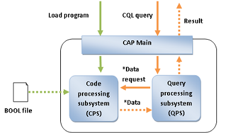
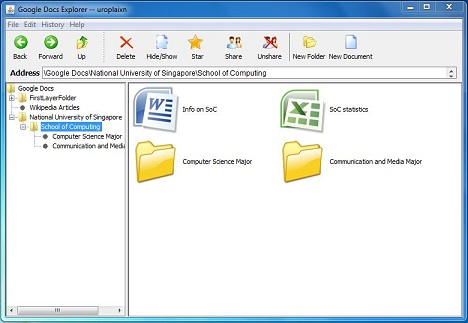
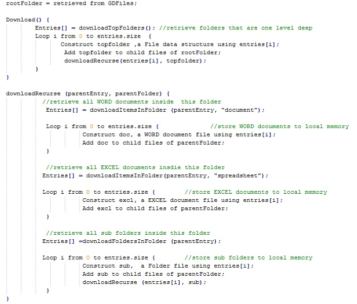
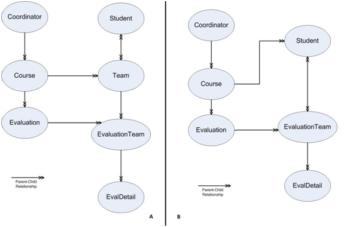

The purpose of writing this page is to serve as a place for me to remember what I had actually learnt during university. Moreover, high school graduates might find the following information useful for them to decide whether to choose CS as a college major. |
|---|
This is the most fundamental course for all SoC students:)
It was named as CS1101 at the time when I studied as a freshman. But later it was changed to CS1010. The content should remain similar.
Some students say that this is a course teaching Java, or Scheme, or C++, or C, depending on which variant of CS1101 you're taking. I disagree with this view. Although we did learn beginning programming skills here, the language itself is just a platform to facilitate teaching of programming methodologies. The essence of the course is to teach students something universal to all computer languages: information about bit/byte, data types, concepts of variables and constants, logic flow (negation, if/else, loop), recursion, exception handling, etc.
I couldn't recall much of what I've learnt in this module because it was too long ago. However, when I was in my senior year, I did teach freshmen tutorials on these courses. I also created some presentation slides in my teaching sessions. Here I would share them as follows:
My teaching received the following feedback from students in CS1010 class: (grammatically corrected)
What are the teacher's strengths?
Although not perfect, the feedback was still quite encouraging for me. The complete set of feedback is available in this Teacher Assessment Report. Note that the average score is computed among scores from all faculty members in SoC, including senior lecturers and professors.
In the view of many NUS students, CS1101 and CS1102 are famous as the two traditional CS fundamental courses. This course is like a further extension of the CS1101. It touches some slightly more abstract topics in Computer Science, such as Data Abstract Type, Encapsulation, Inheritance, Polymorphism, Linked List, and etc. I was taught by Prof. Tan Sun Teck at that time and he had many years of experience teaching this module.
In my memory, the lab assignments in this course were undoubtedly much more difficult than those in CS1101. They involve more in-depth thinkings and require more careful planning. Each week we were assigned with a set of programming lab questions. Quite often, these questions were not meant to be completed within a few hours. In the beginning of week, We needed to discuss among ourselves on the approaches in solving the questions. We then started to code in the middle of week. The debugging process would probably last until the last minute before submission, depending on how we planned the codes.
The most time-consuming lab assignment in my memory is a task of writing a sequence of commands mimicking the UNIX file system. For example: "mkdir", "mv", "rm", "touch". The complicated part is that the directory system does have recursive structure, so there would be a lot of cases to handle.
If you are interested, feel free to try this lab out. :) I think this serves as a good exercise even for those professional programmers.
This is a course teaching students who have some basic programming concepts to have further understanding on the computer. Normally, students who find this course interesting might continue their study in Operating System and some more lower level computer architecture courses. I was taught by Aaron Tan, a popular teacher among students. He made the course quite interesting and easy to learn for us. The lectures were well planned and the homeworks sufficiently covered the topics. So it was not hard to follow if students (such as me^_^) attend all classes and do all homeworks regularly. 
Some topics covered are:
Among these topics, the pipelining concept is widely adopted in many practices in everyday life as well.
We also learnt a lot about logic gates (which can become very very complicated when different types of gates are combined together to form a large logic circuit!) and encoders/decoders. This topic is interesting; I remember we need to play with this logic trainer (picture above) and plug some integrated circuit chips onto its breadboard.
This is also my only time dealing with assembly language. In the later years, I focused more on higher level programming languages. But I would say these basic concepts are undoubtedly necessary for everyone who wants to be a programmer.
There are a lot of topics in this module. But I remember most on the Cryptography and Wireless LAN. After all, these are highly relevant to everyday contexts. This is also the first time I learnt about RSA and the algorithm helped me understand the encryption/decription mechanism worked in many common scenarios.
I also did two projects with another girl in SoC. At the time, I hadn't studied the concept of multi-threading because I took this course one semester earlier than the "Operating System" course (mentioned below), so I was struggling for quite some time. But soon I learnt that I should not limit myself to school teaching materials and went to look for online tutorials in multi-threading implementations. It helped a lot in my projects. At the same time, this made me become more aware that self-learning is a very important skill for programmers.
Here are the two projects I had done:
| Parallel Web Crawler | a web crawler which sends HTTP requests to many servers in many threads simultaneously |
|---|---|
| Instant Messenger | I explored the concept of Observers and Listeners and it turned out not easily implementable. In the end, I used Client/Server mechanism to implement it, i.e., one single server handling communication among different client threads. |
A very common module among undergraduate CS syllabi in the world:)
There are many very useful concepts taught here:
In addition, I also did quite a number of challenging lab assignments in this module. All were written in C under Unix-based Operating System. Here is an example of the lab (Solution unfound...Sorry:P ).
Database Systems was one of my specializations in SoC (The other one is Algorithms). I had taken almost all the database courses below 6000-level in SoC, including CS2102S Database Systems (A+), CS3223 Database Systems Implementation (A), CS4221 Database Design (A) and CS5226 Database Tuning (A+). In NUS, A is the grade given to the students with best performances in a subject, whilst A+ is a grade given to students who perform exceptionally well (there could be zero students getting A+ if the professor is unhappy with the performance of whole cohort).
I took this as a summer course. It serves as a good introductory course to SQL and many fundamental database concepts, such as table, index, primary/foreign key, ER Diagram, and so on so forth. We also touched on normalization. But compared to the depth I've learnt about normalization in a later module, this was quite a little.
As this is the S-variant of CS2102, we also did some very tiny researches on XML and its closely related concepts such as DTD or XQuery. This is my project on XPath. (Ahh! All the fancy PPT styles created by freshmen...)
Perhaps the more impressive part about this module is a website about library catalog we've created using MySQL and PHP. I designed the data schema for this project; since then, I am always the person who design the data schema for a team comprising people with comparable programming skills as mine. Until now, I am still taking the role of designing data schema in my TA Action Learning Project in Credit Suisse.
This module covers more on the internals of database systems. It gives me a much more detailed view on the database system itself from the developer's point of view, unlike CS2102S which focuses more from user's angle. Of course, database systems differ vastly from one vendor to another vendor. Oracle, DB2 and Microsoft SQL Server all possess different internal implementations and that's why they have different advantages and disadvantages for database users to consider and pick. This module is trying to make these internal concepts generic so that students could grasp the main parts of all the database implementations.
Some concepts it cover look highly similar to those in "Computer Organization" and "Operating System" (Again this module!). However, the concepts covered in the OS module are some mechanisms implemented in main memory or cache in the file system, while the concepts covered in this module are implementation in disks and main memory.
| Module | Discussing How to Avoid Access | Discussing How to Access This Instead |
|---|---|---|
| CS2100 Computer Organization | Register | |
| CS2106 Operating Systems | Main Memory | Cache |
| CS3223 Database Systems Implementation | Disk | Main Memory |
The above table was not official. It is just showing my personal opinion. Of course, These three module undoubtedly do not only cover the topics on which to avoid or which to use instead. These are just a small portion of each of them.
I also did two projects and a few lab assignments. Basically, I need to play around with the PostgreSQL.
The portion in this module which gave me most impression would be the database normalization in relational model: 1NF, 2NF, 3NF, BCNF, 4NF, 5NF/Project-Join Form! Domain-Key Normal Form!... Yes, true. We need to remember how to identify all these normal forms and know the procedures to convert one to another. And this is just a portion of Relational Model. Other than that, we learnt Entity-relationship Model, Object-oriented Model and many other data models. On top of these, we also learnt some physical designs.
This is the first 4000-level module I took. One very important difference of 4000-level module compared to other lower level modules is that the materials we learnt were not necessarily well structured and well prepared in a stack of nicely-formatted lecture notes. They could be just a few pieces of research paper from here and there. All we need was to read that research paper and organize the learning materials according to our own wills. Of course, lecturers could turn a research paper into PowerPoint slides in class. However, I found that the learning effect would be much better if one reads the research paper directly. I remember that there was one chapter which contained information from a published paper from the professor himself.
I also did a project, with two other students. Basically, we implemented the algorithm recommended by one of the lecturer's published papers. Interestingly, we discovered some portions of the algorithm which are somewhat "un-implementable" and mentioned to the lecturer. He happily accepted the flaw we've pointed out, although it was a very tiny flaw compared to the smooth flow of the whole picture. Sometimes, pseudo-algorithms may look perfectly fine unless you really go to implement them out. 
This is the research paper on which we were working. Our team implemented the algorithm mentioned in this paper using Python. We named it "DiscrepancyRemover".
One of my contribution to the project was that I designed the data schema (as follows). I helped the team clarify the unit concepts mentioned in the paper and tried to establish a sensible relationship among these unit concepts from the paper. We implemented each of these units in Python classes. Note that "Entity" is a super class of "Relationship". I came up with this idea because in ER-Diagram we have the idea of abstracting relationship to become a higher level entity, a process called "Aggregation". This is our presentation.
After CS4221, I felt no surprise when I again was required to learn a lot of research paper in this module. This is also my first time dealing with Oracle Database. Unfortunately this Oracle db had a compatibility problem with Windows 7 -- a connection problem due to the fact that it created a folder using a fixed IP address and used that folder for authentication and further operations. So I encountered quite a lot of troubles dealing with this. This gave me a bad first impression with Oracle db -- I thought it was too bulky and too commercial in students' project use. However, after I graduated, I realized that there were quite a lot of advantages of Oracle db that I didn't really consider at that moment of time.
Database tuning is about changing certain tuning parameters of a running database in order to make it perform better. We started off the module with introduction to the following tuning parameters:
| # | Parameter | My Own Explanation |
|---|---|---|
| 1 | Hardware | Just spend some more money lah! Buy a better processor (CPU bottleneck), or buy more disks (IO bottleneck), or buy more memory (Buffer Size bottleneck)! |
| 2 | IO / Memory Access | How to reduce IO access and increase memory access |
| 3 | Schema | Normalization, denormalization, materialized views... |
| 4 | Index | This is my favourite tuning parameter when I was in my previous team in Credit Suisse...Yes I did database tuning in workplace... So this once again proved the usefulness of this course... |
| 5 | Query | Sometimes the query itself is unnecessarily troublesome and long-winded. Should find someway to re-write it. This query tuning is quite complex. Sometimes, database does keep its own statistics counting in order to better understand the pattern of data it is storing, so as to come up with better execution plans for given queries. |
So the module went one by one. We learnt about the details of each tuning parameter and experimented it on the machines
I worked with another two students to write a database dashboard in PHP, which is to help database administrators to monitor the health of a running database. Of course, besides the existing big DB which is monitored by our program, we also have another small DB to keep our statistics and user customization data. These were all implemented using Oracle database, connected using PHP scripts.
We judged that some database parameters are important to the health monitoring activity, such as the PCT_FREE_MEM in Shared Pool. Here is our presentation. It would give you a better idea of what we had done.
The two modules I've taken under this category were CS2305S and CS2306S taught by Prof. Lee Wee Sun. These were named as "Problem Solving in Computing" and "Problem Solving in Computing II".
These two modules were for students from the Special Programme in Computing. This programme is designed as a research-oriented track for talented School of Computing students.
Since these two modules together form a complete set of research learning objectives, I would explain them as a whole.
Basically, we need to read through quite a number of research paper which were recognized to have revolutionary impacts on their respective subfields in CS. To show that we fully understood the paper, we need to summarize them within 1000 words. This summary produced needs to answer a set of questions set by lecturer.
Some examples of the paper I've read were shown below (not comprehensive). I also uploaded my summaries here with comments from Prof. Lee.
Besides writing summaries, students take turn to do presentations on each of these paper. The presenter need to show in-depth understanding of the paper he or she analyzes.
The following were two presentations I've done. One is on Alan Turing's paper on Artificial Intelligence; another one is on Xiaoyuan Tu and Demetri Terzopoulos's Artificial Fish.
I joined an interest group of Natural Language Processing and I did a quasi-research topic on Chinese Word Segmentation under the supervision of Prof. Ng Hwee Tou. He offered me a part-time research paid job so that I could work more in the December holiday of that year. Besides meeting me once per two weeks, he also appointed a PHD student to closely monitor my progress. Under such supervision, I did a comprehensive literature review on many latest papers in this subfield, reproduced the steps and results in the experiment he'd taken in an unpublished paper in building an improved version of Chinese word segmenter, and developed a few tools to facilitate his research works. Although as a sophomore I might only contribute to my supervisor's research to a small extent, it was quite important that through this I had a much more realistic picture of a typical research process in my mind.
My final project report: Exploiting Additional Training Corpora for Chinese Word Segmentation
So throughout the course, we were taught a set of research approaches and methods, e.g. how some scientific experimentation approaches can produce misleading results. Also, we learnt approaches in how to read or write research papers. On top of that, we also learnt some algorithms and analyzed their benefits and drawbacks.
At the end of the semester, we were asked to complete a take-home exam within two days. It sounds great, isn't it? TAKE HOME EXAM. That means we could discuss among our friends and come up with solutions together. In fact, all the students who took the module were likely from the SPC programme and were all quite smart. However, this also meant that the questions could be so tough that even we discussed together we might still have no clues! And indeed they were.
This is my answer to the take-home exam. Of course, this was produced after two sleepless nights. And it was produced after I discussed with three other smart friends who also underwent two sleepless nights... The questions were difficult to a typical CS sophomore. But they were really good in training one's reasoning abilities.
I took CS3243 Foundations of Artificial Intelligence in Year Two. This is another must-take course for CS major students. The topic looks very fascinating to many outsiders: there have been a lot of sci-fi movies around this topic. Indeed it is fascinating, but in a way different from what's expected by outsiders. It requires intensive algorithmic planning and logic reasoning. There is also some Maths involved.
The list of topics we've covered was just quite common in many AI introductory course. The more interesting part of this module would be the three projects I've worked with my two other friends.
Most of us have played this pipe game before.  In this game, the goal is to lay pipe to divert ooze from a gushing sewer main break into a system of pipes to keep it from leaking out as long as possible.
We were of course not asked to implement this pipe game. Instead, we were asked to design an intelligent agent which can "play" this game well. Our intelligent agent should be able to obtain a good score in the pipe game. The higher the score it can obtain, the more intelligent it is, and therefore the higher our grade for this project would be.
We adapted the Recursive Best-First Search (RBFS) as the search algorithm in this agent. At any stage during the game, the agent needs to determine in which slot of the board the next given piece can be place. Therefore, it needs a search algorithm which can tell it the most suitable next slot. In each step, we keep track of the best and second best choices up to five levels. This is to prevent the agent from committing some shortsighted mistakes if it simply picks the best choice at the moment.
So how did we decide which is a better choice at each step? We designed a Utility Function indicate the desirability of a given state in this game. Read this final report of our project to see the details of the utility function, as well as the search algorithm.
This was a really fun project^_^. It was about designing algorithm to let a robot learn how to navigate through an unknown maze.  We assembled the robot from a LEGO kit provided by the school and played around it.
We adapted the iterative version of backtracking search as the search algorithm. It is used for a depth-first search that choose to navigate towards next node whenever it is legal; it will backtrack to the previous node whenever there's no more legal next nodes from which the current node to choose. There were two phases: exploration and backtracking. In the exploration phase, the next node must be a legal square for the robot to move to. During backtracking phase, the robot moves back one cell along its original path.
We also came up with a creative way of implementing the 4X4 maze in our codes: we used a 7X7 array to store the maze. Why? This was because we were not given the information about the starting point of the robot in the maze: it could start anywhere. So in our 7X7 array, we could simply let the middle of the array (i.e. coordinates {3, 3}) to be the starting point. As the robot navigate inside the maze, the environment of some Square nodes would be updated; after the robot completes navigation (either it reaches goal cell or it explores the whole maze and finds it unsolvable), at most there will be 16 Square nodes fully explored, constructing a 4X4 maze configuration inside the 7X7 Square array.
Perhaps the more time-consuming part was to deal with the Lego robot. The RCX robot we used is quite old and thus there are a lot of engineering problems (inconsistent walking distance, inaccurate rotation angles and imbalanced power of two sides) despite of the correct algorithm. To deal with this, Setpower method is used to adjust the imbalanced power of the left motor and the right motor. Individual opposite rotation of the wheels is used to adjust the rotation angle.
This is our presentation slides. We obtained a nearly perfect score in this project and the lecturer even took a video of our robot successfully navigating through the maze!
This was related to the problem of Document Classification. We were asked to use kNN Classification method and Decision Tree method separately to categorize any documents given.
1. kNN Classification method:
The basic idea of kNN classification is that the category of a given document is determined by the categories of its k nearest neighbors. For example, if k = 5, the nearest 5 neighbors of a document contains 3 from category A, 1 from category B and 1 from category C, this document is classified as in category A.
2. Decision Tree method:
The text categorization process is divided into two stages: training stage and testing stage. Our intelligent agent needs to be 'trained' first by learning from the documents which were already categorized correctly. Then it could proceed to 'test' or start working to categorize some documents. We then look at the true categories of these test documents and compare them with the results from the agent, and concluded whether it was useful in doing the works.
In this final report, you could see the details of our design in both methods of text categorizations, as well as the evaluations on the accuracy of results.
Algorithms was one of my specializations in SoC (The other one is Database Systems). Although I did obtain A+ for both CS3230 and CS4231, It was most probably because Prof. Yu Haifeng's teaching style was quite suitable for me: I found that I absorbed his teaching materials very quickly than other students. I'm also not sure why... I couldn't say that I am good at algorithms because everyone, including me, knows that this is a difficult field. What I could only say is that I like to spend time thinking and solving challenging logic questions.
I attended this course in University of Illinois at Urbana-Champaign as an exchange student. All the course materials about CS373 Fall 2009 are still currently available online.
The most noticeable difference I could see in this class would be the use of blackboard: the lecturer used the most traditional chalk and blackboard to teach. I only saw this mode of teaching when I was studying in a classroom in China and never saw this in Singapore at all. The lecture theatre was not very big. The lecturer seemed to be quite popular among students and therefore, the lecture threatre was always full--I need to go there a few minutes earlier or else I could only sit at the last row. Sitting at the last row might be good for a class using projector, because while you could enjoy your own sweet time at the cozy corner of the room, you could also listen and watch the lecture slides clearly. But here it was different: you couldn't see the words on the blackboard if you sit too far away!
The course was very intellectually stimulating. Though this is a very theoretical class, many students were enthusiastic in raising questions to lecturer. Although their questions were not mature, the fact that they came up questions to new concepts so quickly did impress me a lot. I think students in Asian countries might need to learn such proactive attitude.
The most impressive part leaving in my mind about this course would be the Sipser textbook: 'Introduction to the Theory of Computation'. I read the whole book for more than three times in that exchange semester, in the UIUC engineering library.
As what the name suggested, the course taught students how to design and analyze algorithms. This course could be seen as an advanced version of CS1102. The course is maths-intensive and requires a lot of abstract thinking ability.
Here are some topics we've covered (this list is not comprehensive!):
The lecturer set up a lot of challenging problems in homeworks. These were quite useful for us to understand the learning materials. In fact, I quite enjoyed solving them^_^.
Since I had very good experience in learning CS3230 (challenging, intellectually stimulating, and yet I get good grades for it), it was natural for me to continue a more advanced course in algorithms taught by Prof. Yu again. So this time, I picked CS4231.
In this course, most of the teaching ideas came from the book 'Concurrent and Distributed Computing in Java' written by Vijay K. Garg. However, the book was actually not very well written, although it contained quite some good ideas. Prof. Yu adapted the contents of that book quite significantly in order to make those materials become much easier to understand. Sometimes he rephrased the description of a particular algorithm in that book in a totally different way. But one thing was clear: solely reading the textbook was hard for me to grasp the concepts unless I attended his lectures and tried out some homeworks.
Some of the topics we've covered (not comprehensive) are:
Note that for each algorithm we've learnt, we also need to know how to prove its correctness. And we need to apply the techniques in correctness proof to other random algorithms given.
When I tried to recall the courses I've taken in Software Engineering, I couldn't talk without Dr. Damith C. Rajapakse, because he's the lecturer of two of the SE courses I've taken and the supervisor of my final year project in software engineering. Since he had some industrial experiences, he used a lot of real-world exmaples during lectures to illustrate the abstract concepts in SE. This made his teaching style quite welcomed among students, or at least among my social circle (not sure about other students, as most of my friends in SoC are geeky programmers). This again reinforces the idea that Software Engineering is a computing subfield which is very very closely related to the industrial world.
In this module we had done a software by strictly comforming to the practices of software engineering taught in classes. It was a library system. This is also my first time learning Three-tier Architecture and utilized it into the implementation of my project. Since then, the layered design of data-logic-presentation had been built into my mind. In almost all my subsequent software designs since CS2103, although there are undoubtedly certain variations, the basic structure of my software is always highly similar to this architecture. In this sense, CS2103 was quite a useful module to me.
Nope, I did not go to lecture theatre or tutorial room to preach to a group of junior students, as what I did in CS1101. I simply helped Dr. Bimlesh to write a MineSweeper program, which strictly follows the coding standards and clear architecture design, so as to give students a sample example of software design to study. I used my most familiar language -- Java -- to write this problem and provided one text-based version and one GUI version. For the GUI version, I used JavaFX to implement.
The course has 8 modular credits -- same weight as two normal courses. However, according to how I experienced, its intensity is more than that of two courses combined. I won't be scared by its intensity, because I also learnt quite a lot from it.
The lecture component is interesting, though minimal. We learnt some popular techniques in dealing with big-scaled projects in real world and their benefits and drawbacks. For example, we learnt about keeping track of bugs' life cyles -- from raising it to finally solving and closing it.
The major component of this module is the project. I worked with other five smart guys and girls: Zi, Caleb, Longwu, Sufeng and Wendi. It was a wonderful experience to work with programmers who are very good and yet not too good ('cos we were all undergraduates) that you almost cannot contribute anything. Although the project was so intensive that quite often I did not have enough sleep in order to come up with better deliverables, I would say the feeling of accomplishment was so good that it overcame the pain.
So what did we do?
We started off from an old software called Code Analyzer Plugin (CAP) given by the lecturer. This tool is supposed to do static analysis on a fictitious OOP programming language called BOOL. We did intensive black-box testing on CAP. This required careful design on the test plans in order to test whether the software had satisfied every aspect of the requirement. We designed a large set of test cases. In the end, we submitted the bugs we've found from the software.
Then, the lecturer released the existing bugs of this software to us. Some were tricky and not found by our testing. We also identified a few of weird bugs that were not known before. From this, we learnt that a non-trivial software can never be perfect: there will always be room for further enhancement and bugs waiting to be discovered and resolved.
After that, we were asked to do an AutoTester to automate system testing of CAP. This was actually a mini-project within the big project! We designed the AutoTester and debugged it. And then we did intensive testing on this thing which was supposed to do testing on CAP... (Don't be confused!) It was a GUI-based tool. It takes in a set of customized test files in XML format and some source files in BOOL and outputs the result files in XML format. Of course, we won't show users XML-formatted things. Everything was nicely presented in web pages.
Maybe a picture is worth more than a thousand words:
We had gone through three complete software cycles to enhance this AutoTester. For the final version, we had a well-documented Design Report and a User Mannual for it. (Password: xiaonizi)
Next, we were given the source code of CAP and did some works on it, such as refactoring. We analyzed its existing implementation and commented on its drawbacks and potential places for improvements. Based on this, we came up with our own system design of the tool and named it "Bug Hunter". 
In the following, we did some task distribution among ourselves. Since the end product consisted of mainly two parts: Code Processing Subsystem (CPS) and Query Processing Subsystem (QPS). Each subsystem consists of three or four components. It was thus quite easy to divide the code into six portions. (Again, this project was indeed well designed that it was very suitable for students to do team works.) I was allocated to manage the Parser component of QPS. The big picture of the software is roughly like the diagram on the right.
Based on this design, we coded intensively. Of course, the AutoTester was very useful in this case. It helped us monitor the progress of our product. This was Test-Driven Development. We also used contribution tracker and some other tools to monitor our progress.
This is our final report~~~ But I doubt you have the patience to read it through because it had 67 pages. (Password: xiaonizi)
I would encourage my juniors who aim for a first class honours in CS to try out the UROP program. This is a way to train your research skills and prepare yourself for a even more intensive final year project, which is compulsory for gaining a first class honours in SoC.
In SoC, if a CS major student took a UROP project which spans across two semesters, he or she could be exempted from the core requirement of CS3215 'Software Engineering Project'. However, I chose to do both the UROP and CS3215, so that I could have the best of both worlds then. Since I was in an overseas exchange program for one semester, I could only afford to have one-semester UROP project. However, this project was intensive and the time I spent on it were definitely beyond the workload for a typical 4-modular-credits course.
I named the final product I delivered in this research project as Google Docs Explorer. The initial look on my project might make one think that this is an implementation-oriented project. But in fact it involved a lot of research components. Firstly, the whole concept about users' unsatisfaction on using Google Docs interface came to me very vaguely from Dr. Bimlesh at the beginning. It required some creativity in making the abstract ideas to become concrete. Secondly, there had been research and exploration made on previous learning of Google Docs interface (its synchronization of offline documents and its security issues) and Windows explorer. Lastly, like other research projects in the world, this project had never been intensively and purposefully conducted before. In fact, when Google released its Google Drive this year, I found that its Desktop version was highly similar to the tool I've developed two years ago!
The following is the abstract which came from my final report:
Based on significant studies on Google Docs interface and Windows explorer, it is found that there is a need to design a Windows explorer virtual shell replacing the existing Google Docs interface, in order to offer Google Docs users an interface with improved usability and security. To achieve this, Google Docs Explorer, a high-fidelity prototype of such a virtual shell, is developed in this project. It is a tool allowing users to manage their online Google Docs files on a nicely designed interface which looks similar to their familiar windows explorer. This prototype is close to a final delivered system, as users could access almost all functions available on the original Google Docs interface. It connects to the Google cloud via the Google Documents List Data API; and there are a few problems of the system due to some deficiencies of this API. This report mainly presents details of system design and implementation of Google Docs Explorer, and evaluates how well it has been implemented in terms of usability and security consideration, as well as points out some of its limitations and possible improvement.
Below are some snapshots of my 'Google Docs Explorer':
Log-in Window
 Main Window
Algorithms had been designed carefully to ensure some functionalities to work. This included 'big' parts such as how the software can recursively download the online documents from Google Docs into a hierarchy of folders. This also included 'small' tricky parts. For example, when users are viewing documents and folders back and forward, the software needs to maintain a history path and considers all combination possibilities of user choices.
Recursion used in data retrieval algorithm. Skip the pseudo code if you get confused:-P

This is my final report (password: uropxiaoni) but it is a big lengthy. To understand the project quickly, you might find this presentation more useful.
My final year project was to think of the best ways to create a cloud-based SaaS peer-evaluation tool for student team projects so that college coodinators (or instructors) and students might benefit from it in the future. I did this project under the supervision of Dr. Damith, who was also my teacher for CS3215 software engineering project. Undoubtedly, this project was in the realm of software engineering. In fact, I had gone through two full cycles throughout the project -- requirement gathering (brainstormed together with Damith and another student Gerald), design (core part of the project), implementation, testing (comprehensive and thorough testing on the application). But for me, it was much beyond simply delivering a product. There were a lot of tricky parts in designing the system and one needs to have good logical thinking in coming up with a solution which can meets all different aspects of requirement.
Below is the abstract of my final report:
Peer evaluation is commonly used technique for assessing students' contribution levels in team projects. TeamMate is an online peer-evaluation system we designed, developed and deployed on Google App Engine cloud platform. TeamMate has undergone two iterations of software development life cycle to improve its modularity, usability, security, extensibility and scalability, and to better accommodate coordinators and students' different needs during peer evaluations. The final product has been thoroughly tested on its functionalities and performance; and overall it is proved to be an efficient and scalable system.
There was one part in the design phase which took me quite some time: the data schema. I had changed it over and over again in order to come up with a more compact and versatile one. I even came up with time and space complexity measures in different scenarios of using the data schema.

Note that in the user scenarios, we always considered this system to be used by many instructors and many students at one time. So students might join many different project teams in many different courses under different instructors. And yet our system needs to ensure that each student could only see one single page showing a list of projects from different courses.
In the first data schema, I assumed that students remain in the same project team for the same course, i.e., in the CS3243 course I was working with two other students, Zeng Qiang and Qiao Li, for all three projects and I never changed my teammates.
In the second data schema, students can switch teams between evaluations. For example, instructors might choose to let students change teammates in different projects. This is either to let students interact more among themselves, or to ensure fairness so that some poor guys need not struggle with their freerider teammates forever, or whatever the reasons.
Each tiny and delicate part of the data structure had its own special purpose. For example, the 'EvaluationTeam' component is to reduce time complexity of data retrieval for different purposes by sacrificing a little bit in terms of space complexity.
To know more details about the design of this tool, you could download my final report. (Hover this for password)
Here are a few of the demonstration videos on the final product. The product had much more functionalities than what's shown here. Here is to give audiences a glimpse on the features available.
This project had a poster presentation on the 24th IEEE-CS Conference on Software Enginnering Education and Training. You could see an excerpt downloadable as PDF format from the digital library of IEEE Computer Society here.
So far I've covered most CS courses I've taken in NUS. I omitted some minor ones, such as 'Computing and Society', which was more on humanities side of the Computing technology (e.g. how the IT technology influence our lives, etc.).
I also studied two courses in University of Illinois at Urbana-Champaign: CS418 Interactive Computer Graphics, and CS421 Programming Languages and Compilers. Moreover, I studied one more course in HCI in NUS. I would briefly cover each of these three courses below.
In UIUC, beginners to graphics were supposed to take some introductory courses before jumping straightly into the 400-level courses such as CS418. But I did so, although I was aware that I might not get good grade if I took a too advanced version of graphics course. Of course, my grade in UIUC was not computed into mine in NUS. So I was brave enough to explore a more difficult class. Their graphics website were still there on Internet.
We learnt many core concepts in computer graphics and did some lab assignments using OpenGL. The components on polygonal modeling, transformation and viewing involved a lot of linear algebra knowledge. So if one wants to ace in graphics, one needs to be proficient in linear algebra calculations and has some good sense in spacial visualizations.
Another advanced course in UIUC. In fact, sometimes I felt that I shouldn't take such a difficult course, even though grade was not important. There was another course in programming language in UIUC -- CS321 -- which was the pre-requisite of the CS421 (their website here). Since I jumped straight away to a more challenging course, I felt a bit confused at the beginning and took some time to study the pre-requisites in order to catch up with the rest.
The language we've used thoughout the course is OCaml. Very rarely seen language. But it was good to be used as a teaching language to let students understand better on the constructs of programming languages.
Sometimes I feel that HCI is quite a 'soft' topic compared to other subfields in CS. Moreover, after I read the textbook -- the one recommended by almost all people in the HCI community, I felt that most topics had already been comprehensively covered by the three ladies who wrote this book. Most concepts were common sense and there had already been some pioneers done a systematic summary on all these concepts.
Four of us did a project using Flash. It was not difficult. And it was quite fun to learn Flash as well. The problem was that when we applied those concepts we've learnt in class into the deliverable, there were always conflicts in the aesthetic side of the product. When we presented the product to the lecturer, I had the feeling that this is an arts course and he was judging the artistic value of our works, instead of the technical challenges we've overcome. Of course, an A- grade was okay for me for this course. But I sincerely feel that it might be done better.
Nevertheless, I learnt from Internet that HCI is actually an important field nowadays, as the interaction between non-tecnical users and computing systems becomes more and more prevalent. This makes research in this field quite hot.